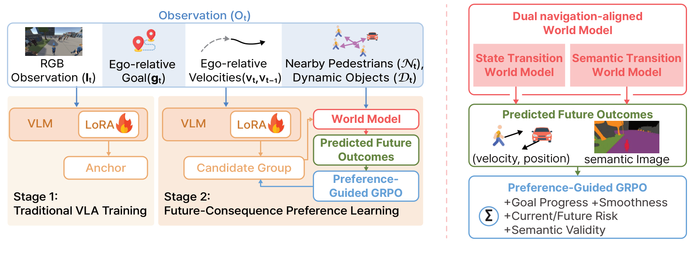
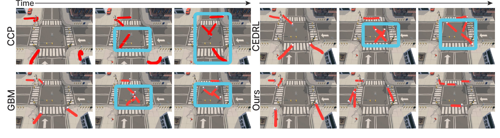
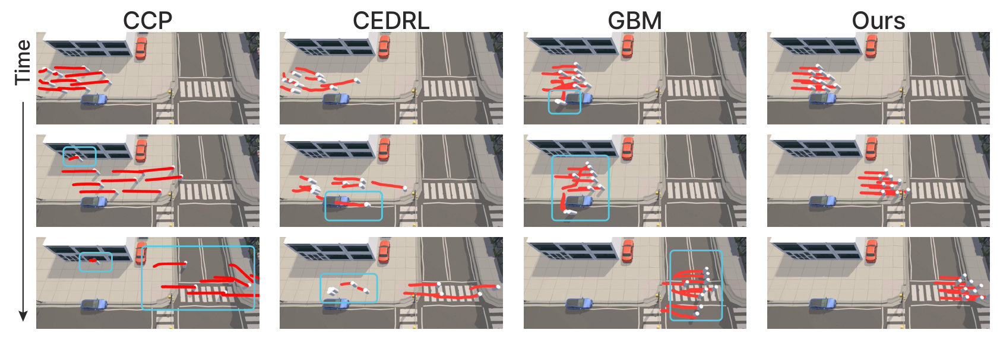
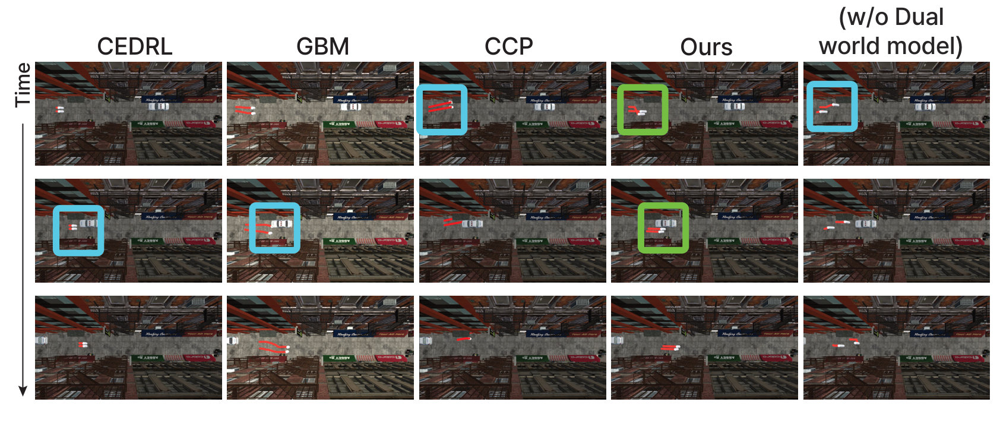
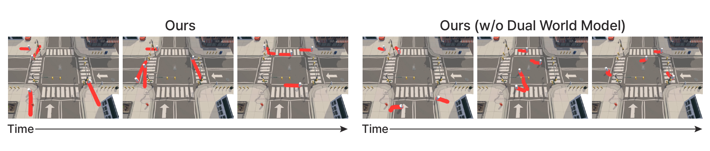

World-Model-Guided Human-Like Navigation in Multi-Agent Scenes
*Equal contribution †Corresponding author
NeurIPS 2026
World models are used only at training time, as a preference oracle. At deployment they are removed and the policy acts in a single forward pass.





@inproceedings{hong2026seeing,
title = {Seeing Beyond the Next Step: World-Model-Guided Human-Like Navigation in Multi-Agent Scenes},
author = {Hong, Seong-Eun and Hwang, JuYeong and Kim, Jinhyun and Jang, Hanyoung and Kang, HyeongYeop},
booktitle = {Advances in Neural Information Processing Systems (NeurIPS)},
year = {2026}
}